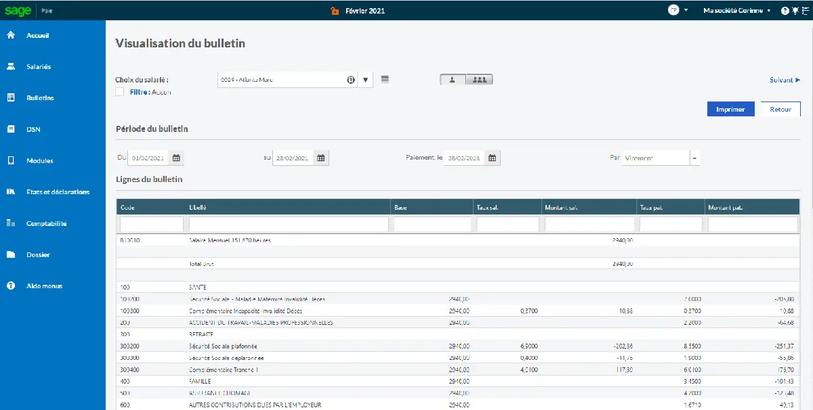
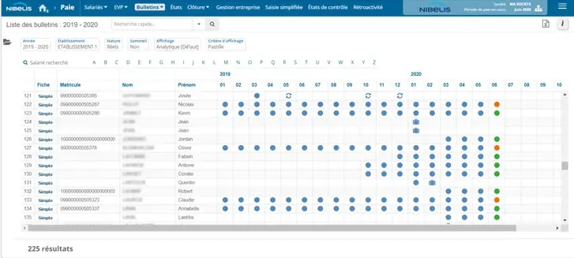

- Vérifiez en priorité la couverture de vos conventions collectives et la conformité DSN
- Comparez toujours au moins 3 solutions avant de signer, en demandant un devis personnalisé
- Le coût total inclut l'abonnement, la mise en place, la formation et les mises à jour légales
- Privilégiez un logiciel cloud avec mises à jour automatiques pour rester conforme aux obligations URSSAF
- Testez l'outil avec vos propres données de paie avant de vous engager sur un an
Choisir un logiciel de paie est une décision stratégique pour toute PME française. Un mauvais choix peut engendrer des erreurs de bulletins, des retards de DSN, des pénalités URSSAF et une surcharge administrative pour vos équipes RH. À l'inverse, le bon outil automatise la majorité des tâches, garantit la conformité légale et vous fait gagner plusieurs heures chaque mois. En 2026, le marché français des logiciels de paie a considérablement évolué. Les solutions cloud ont largement remplacé les logiciels installés, les mises à jour réglementaires sont désormais automatiques et l'intelligence artificielle commence à s'intégrer dans les processus de contrôle et de vérification. Ce guide vous accompagne pas à pas pour choisir le logiciel de paie adapté à votre entreprise, que vous soyez une TPE de 5 salariés ou une PME de 200 collaborateurs.
Les 7 critères essentiels pour choisir son logiciel de paie
Avant de comparer les logiciels du marché, il est indispensable de définir vos critères de sélection. Chaque entreprise a des besoins spécifiques selon son secteur, sa taille et la complexité de ses paies. Voici les 7 critères que nous recommandons d'évaluer systématiquement pour choisir un logiciel de paie adapté à votre PME.
1 La gestion des conventions collectives
La France compte plus de 700 conventions collectives nationales (CCN), chacune avec ses propres règles en matière de salaire minimum, de primes, d'indemnités de licenciement, de classification des emplois et de temps de travail. Un logiciel de paie performant doit prendre en charge votre convention collective de manière native, avec des mises à jour automatiques à chaque avenant ou modification. Si votre entreprise applique plusieurs conventions collectives, par exemple dans le cas de multi-activité ou de multi-établissements, le logiciel doit pouvoir gérer cette complexité sans paramétrage manuel supplémentaire. Concrètement, vérifiez que le logiciel couvre votre ou vos CCN spécifiques. Les éditeurs leaders comme Silae couvrent plus de 600 conventions, PayFit en gère environ 350, tandis que certaines solutions plus généralistes se limitent aux 50 conventions les plus courantes. C'est un critère éliminatoire, car une convention mal gérée signifie des erreurs de calcul sur chaque bulletin de paie, avec un risque de redressement URSSAF en cas de contrôle.
2 La conformité DSN et les déclarations sociales
La Déclaration Sociale Nominative (DSN) est obligatoire pour toutes les entreprises en France depuis 2017. Elle remplace l'ensemble des déclarations sociales périodiques auprès de l'URSSAF, des caisses de retraite, de la mutuelle et de la prévoyance. Votre logiciel de paie doit générer et transmettre automatiquement la DSN mensuelle, mais aussi gérer les événements ponctuels : arrêts de travail, fins de contrat, reprises après maladie. Un bon logiciel de paie intègre des contrôles de cohérence avant l'envoi de la DSN pour détecter les erreurs potentielles. Il doit aussi vous alerter en cas d'anomalie signalée par les organismes sociaux et vous permettre de produire des DSN de substitution si nécessaire. En 2026, les contrôles de l'URSSAF se sont renforcés avec des outils d'analyse automatisée des DSN : il est donc plus important que jamais de disposer d'un logiciel fiable sur ce point. Vérifiez que l'éditeur dispose d'un taux de conformité DSN supérieur à 99 % et qu'il propose un accompagnement en cas de rejet.
3 Le niveau d'automatisation
L'automatisation est le principal levier de gain de temps pour vos équipes. Un logiciel de paie moderne doit automatiser le calcul des bulletins à partir des variables saisies (absences, heures supplémentaires, primes), la génération des écritures comptables, l'envoi des bulletins de paie aux salariés par voie électronique et l'intégration des données de pointage ou de congés depuis un outil tiers. Les solutions les plus avancées proposent également la détection automatique des anomalies de paie, la mise à jour automatique des taux de cotisation et la gestion automatisée des soldes de tout compte. Évaluez le temps nécessaire pour produire une paie complète : avec un bon logiciel, un gestionnaire de paie formé ne devrait pas passer plus de 10 minutes par salarié et par mois. Si vous dépassez ce seuil, l'outil manque probablement d'automatisation.
4 Les intégrations avec vos outils existants
Votre logiciel de paie ne fonctionne pas de façon isolée. Il doit s'intégrer avec votre logiciel de comptabilité (Pennylane, Sage, Cegid, QuickBooks), votre outil de gestion des temps et des absences si vous en utilisez un (Lucca, Skello, Combo), et éventuellement votre SIRH ou votre ERP. Les intégrations natives sont toujours préférables aux exports manuels en fichiers CSV, car elles réduisent les erreurs de saisie et font gagner du temps. Vérifiez la disponibilité d'une API ouverte et documentée si vous souhaitez développer des connexions sur mesure. En 2026, les meilleurs logiciels de paie proposent aussi des intégrations avec les banques pour automatiser les virements de salaires, avec les plateformes de notes de frais et avec les outils de signature électronique pour les contrats de travail. Privilégiez un éditeur dont l'écosystème d'intégrations correspond à votre stack technologique actuel.
5 La qualité du support et de l'accompagnement
La paie est un domaine où les erreurs coûtent cher, tant en pénalités qu'en confiance des salariés. Un support technique réactif et compétent n'est pas un luxe, c'est une nécessité. Évaluez le support sur plusieurs critères : disponibilité (horaires, canaux de contact), temps de réponse moyen, compétence juridique des conseillers et existence d'un accompagnement à la mise en place. Certains éditeurs proposent un support uniquement par chat ou email, d'autres offrent un accompagnement téléphonique avec un conseiller dédié. Pour les PME sans gestionnaire de paie interne, l'accompagnement juridique est un critère décisif. Un bon support doit pouvoir répondre à vos questions sur l'application d'une convention collective, le traitement d'un cas particulier (arrêt longue durée, temps partiel thérapeutique, expatriation) ou la correction d'une erreur de DSN. Méfiez-vous des offres à bas prix qui rognent sur le support : les économies réalisées sur l'abonnement sont souvent perdues en temps passé à résoudre seul des problèmes techniques ou réglementaires.
6 Le coût total de possession
Le prix affiché par salarié et par mois ne représente qu'une partie du coût réel d'un logiciel de paie. Pour comparer objectivement les solutions, calculez le coût total de possession sur 3 ans en incluant l'abonnement mensuel (généralement entre 4 et 15 euros par salarié par mois), les frais de mise en place et de paramétrage (entre 500 et 5 000 euros selon la complexité), la formation initiale des utilisateurs, les coûts éventuels de migration des données historiques, les frais liés aux modules complémentaires (notes de frais, gestion des temps, coffre-fort numérique) et l'éventuel surcoût en cas de dépassement du nombre de salariés prévu au contrat. Attention aussi aux augmentations tarifaires annuelles, qui peuvent atteindre 5 à 10 % chez certains éditeurs sans amélioration notable du service. Demandez systématiquement un devis détaillé incluant tous ces postes avant de comparer les offres. Un logiciel apparemment moins cher peut s'avérer beaucoup plus coûteux une fois tous les frais cachés intégrés.
7 La facilité de prise en main
Un logiciel de paie puissant mais complexe à utiliser sera sous-exploité ou mal utilisé, ce qui augmente le risque d'erreurs. La prise en main doit être évaluée du point de vue de l'utilisateur quotidien, pas uniquement du décideur qui participe à la démo commerciale. Testez l'outil avec un scénario réel : saisie d'un bulletin complet, gestion d'une absence maladie, génération d'un solde de tout compte. Mesurez le temps nécessaire et le nombre de clics pour chaque opération. Les solutions les plus ergonomiques, comme PayFit, permettent à un dirigeant sans expertise paie de produire des bulletins corrects après quelques heures de formation. D'autres outils, comme Silae ou Sage Paie, sont extrêmement puissants mais requièrent une formation approfondie, souvent réservée à des gestionnaires de paie expérimentés ou à des cabinets comptables. Adaptez le choix au profil de l'utilisateur final : un outil simple pour un dirigeant autonome, un outil complet pour un service RH structuré.
Pour vous aider à structurer votre évaluation, voici un récapitulatif des 7 critères avec leur niveau d'importance selon la taille de votre entreprise. Utilisez ce tableau comme grille de notation lors de vos démos avec les éditeurs.
| Critère | TPE (moins de 20 sal.) | PME (20 à 100 sal.) | ETI (100+ sal.) |
|---|---|---|---|
| Conventions collectives | Important | Critique | Critique |
| Conformité DSN | Critique | Critique | Critique |
| Automatisation | Critique | Critique | Important |
| Intégrations | Secondaire | Important | Critique |
| Support et accompagnement | Critique | Important | Important |
| Coût total de possession | Important | Important | Secondaire |
| Facilité de prise en main | Critique | Important | Secondaire |
Tableau comparatif des logiciels de paie en 2026
Nous avons analysé les six logiciels de paie les plus utilisés par les PME françaises en 2026. Ce comparatif logiciel paie prend en compte les critères décrits ci-dessus : couverture des conventions collectives, conformité DSN, automatisation, intégrations, support, tarif et cible privilégiée. Les données sont issues des sites officiels des éditeurs et de retours utilisateurs vérifiés.
| Critère | PayFit | Silae | Factorial | Lucca | Sage Paie | Nibelis |
|---|---|---|---|---|---|---|
| Prix / sal. / mois | À partir de 6 € | Sur devis (via cabinet) | À partir de 5 € | À partir de 8 € | À partir de 10 € | Sur devis |
| DSN automatique | Oui Natif | Oui Natif | Oui | Oui | Oui | Oui Natif |
| Conventions collectives | 350+ | 600+ Leader | Principales CCN | 200+ | 400+ | 500+ |
| Automatisation | Élevée Top | Élevée | Moyenne | Élevée | Moyenne | Élevée |
| Intégrations | 50+ connecteurs | API + cabinets | 40+ connecteurs | 30+ connecteurs | Écosystème Sage | API sur mesure |
| Support | Chat + email, FR | Via cabinet comptable | Chat + email, FR/EN | Chat + tel, FR | Tel + email, FR | Conseiller dédié, FR |
| Cible privilégiée | TPE / PME (5-50 sal.) | PME / ETI (10-500 sal.) | PME (10-300 sal.) | PME (20-500 sal.) | PME / ETI (20-1000 sal.) | PME / ETI (50-500 sal.) |

Logiciel de paie vs SIRH : quelle solution pour votre PME ?
Une question revient fréquemment au moment de choisir un logiciel de paie : faut-il opter pour un outil spécialisé dans la paie ou pour un SIRH (Système d'Information des Ressources Humaines) qui inclut un module paie ? La réponse dépend de la maturité RH de votre entreprise et de vos besoins à moyen terme. Un logiciel de paie pur se concentre sur le calcul des bulletins, la conformité légale, la DSN et les déclarations URSSAF. C'est l'outil idéal si la paie est votre seul irritant et que vous gérez le reste (congés, recrutement, formation) avec des outils simples ou des tableurs. Un SIRH avec module paie couvre un périmètre beaucoup plus large : gestion des congés et absences, suivi des temps de travail, recrutement, onboarding des nouveaux salariés, entretiens annuels, plans de formation et gestion des compétences. Le module paie est intégré, ce qui évite les doubles saisies et les problèmes de synchronisation entre outils.
| Critère | Logiciel de paie spécialisé | SIRH avec module paie |
|---|---|---|
| Périmètre fonctionnel | Paie, DSN, déclarations sociales | Paie + congés + temps + recrutement + formation |
| Profondeur de la paie | Très avancée Meilleur | Suffisante pour les cas standards |
| Conventions collectives | Couverture large (350 à 600+) | Couverture variable (50 à 200+) |
| Facilité d'utilisation | Interface centrée sur la paie | Interface globale, plus de menus |
| Coût pour la paie seule | Généralement plus compétitif | Plus élevé (paie + modules RH) |
| Coût total multi-outils | Paie + outil congés + ATS + formation = cher | Tout inclus, souvent plus économique Meilleur |
| Idéal pour | TPE, paies complexes, cabinets | PME structurées avec RH dédié |
| Exemples | PayFit, Silae, Sage Paie, Nibelis | Factorial, Lucca, Cegid HR |
En pratique, la tendance en 2026 est à la convergence. PayFit, historiquement un pur logiciel de paie, ajoute progressivement des fonctionnalités RH (congés, notes de frais, dossier salarié). Factorial et Lucca, initialement des SIRH, ont développé des modules paie de plus en plus robustes. Le choix dépendra donc de votre priorité immédiate : si la conformité de la paie est critique (conventions collectives complexes, multi-établissements, historique de redressement URSSAF), privilégiez un spécialiste de la paie. Si vous souhaitez centraliser toute votre gestion RH dans un seul outil et que vos paies sont relativement standards, un SIRH avec module paie sera plus efficace à long terme.
- Logiciel de paie pur : idéal si la paie est votre seul besoin (PayFit, Silae, Sage Paie)
- SIRH avec module paie : idéal si vous voulez centraliser toute la gestion RH (Factorial, Lucca)
- Externalisation : idéal si vous ne voulez pas gérer la paie en interne (Nibelis)



Notre méthode en 3 étapes pour bien choisir
Après avoir analysé les critères et comparé les solutions du marché, voici la méthode que nous recommandons pour sélectionner votre logiciel de paie PME. Cette approche structurée permet d'éviter les décisions précipitées et de choisir en toute connaissance de cause.
Étape 1 : Définir précisément vos besoins
Avant de regarder les offres, établissez un cahier des charges interne. Commencez par lister les informations essentielles : combien de salariés avez-vous aujourd'hui et combien prévoyez-vous dans 2 ans ? Quelle(s) convention(s) collective(s) appliquez-vous ? Qui gère la paie actuellement (dirigeant, RH interne, expert-comptable) ? Quels sont les outils que vous utilisez déjà (comptabilité, gestion des congés, pointeuse) ? Quels sont les problèmes concrets que vous souhaitez résoudre (retards de DSN, erreurs de bulletins, temps passé trop important) ? Listez aussi vos exigences techniques : hébergement des données en France, API pour connecter vos outils, application mobile pour les salariés, coffre-fort numérique pour les bulletins de paie. Ce document servira de grille de lecture pour évaluer chaque logiciel de façon objective.
Étape 2 : Comparer 3 solutions en profondeur
À partir de votre cahier des charges, présélectionnez 3 logiciels. Pas 1, pas 7, mais 3. C'est le nombre optimal pour avoir un benchmark significatif sans perdre des semaines en démos. Demandez une démonstration personnalisée à chaque éditeur en insistant pour voir des cas d'usage réels correspondant à votre situation. Posez des questions précises : "Comment gérez-vous la convention collective de la métallurgie ?", "Que se passe-t-il en cas de rejet DSN ?", "Quel est le délai moyen de réponse du support ?". Demandez également un accès d'essai si possible, pour tester l'interface avec vos propres données. Enfin, demandez des références clients dans votre secteur et de votre taille. Un logiciel parfait pour une startup tech de 15 personnes peut être inadapté pour un cabinet d'architecture de 40 salariés soumis à la convention Syntec.
Étape 3 : Tester et négocier avant de signer
Une fois votre choix réduit à 1 ou 2 finalistes, passez à la phase de test. Importez vos données salariés réelles dans l'outil (la plupart des éditeurs proposent un import gratuit pendant la phase de test), générez un bulletin de paie de contrôle et comparez-le avec celui de votre solution actuelle. Vérifiez que les cotisations, les taux et les montants nets correspondent. Profitez de cette phase pour négocier le contrat : les éditeurs de logiciels de paie sont ouverts à la négociation, surtout sur les engagements pluriannuels, les frais de mise en place et les conditions de résiliation. Négociez aussi la clause de revalorisation tarifaire annuelle : essayez d'obtenir un plafond d'augmentation (par exemple, 3 % maximum par an). Enfin, planifiez la migration idéalement au 1er janvier pour éviter les complications de cumuls DSN en cours d'année, et prévoyez une période de double run d'un mois ou deux pour sécuriser la transition.
Les 5 erreurs à éviter lors du choix d'un logiciel de paie
Après avoir accompagné des centaines de PME dans le choix de leur logiciel de paie, nous avons identifié les erreurs les plus fréquentes. Les voici, accompagnées de la solution pour les éviter.
Erreur 1 : Choisir uniquement sur le prix affiché
Le tarif par salarié et par mois est souvent le premier critère de comparaison. Pourtant, il masque des coûts significatifs : frais de mise en place (de 0 à 5 000 euros), modules payants non inclus dans l'offre de base, surcoût pour les conventions collectives spécifiques et frais de résiliation anticipée. Deux logiciels affichés au même prix peuvent avoir un coût total sur 3 ans qui varie du simple au double.
Erreur 2 : Ne pas vérifier la couverture de votre convention collective
C'est l'erreur la plus coûteuse. Vous signez avec un éditeur qui annonce couvrir "les principales conventions collectives", puis vous découvrez que la vôtre n'est pas prise en charge ou est mal paramétrée. Les bulletins contiennent des erreurs, les cotisations sont mal calculées et vous risquez un redressement URSSAF lors du prochain contrôle.
Erreur 3 : Ignorer la qualité du support technique
En période de clôture de paie, chaque heure compte. Si votre support met 48 heures à répondre à un ticket critique, vous risquez de rater la date limite de dépôt DSN (le 5 ou le 15 du mois suivant selon votre effectif). Certains éditeurs proposent un support 24h/24, d'autres uniquement aux heures de bureau, et d'autres encore redirigent vers une base de connaissances en libre-service.
Erreur 4 : Migrer en cours d'année sans préparation
Changer de logiciel de paie en juillet ou en septembre semble parfois urgent, mais c'est une source majeure de problèmes. Les cumuls de paie doivent être repris manuellement, la DSN de transition peut générer des anomalies et le risque d'erreur sur les bulletins des mois suivants est élevé. Les organismes sociaux (URSSAF, caisses de retraite) peinent parfois à réconcilier les déclarations provenant de deux systèmes différents sur le même exercice.
Erreur 5 : Choisir un outil surdimensionné ou sous-dimensionné
Une TPE de 8 salariés n'a pas besoin de Sage Paie, qui est conçu pour des structures de 50 à 1000 collaborateurs. Inversement, une PME de 150 salariés avec 4 conventions collectives différentes ne peut pas se contenter d'un outil basique. Un logiciel sous-dimensionné vous limitera rapidement, tandis qu'un outil surdimensionné vous coûtera trop cher et sera difficile à prendre en main.
Quel budget prévoir pour un logiciel de paie en 2026 ?
Le budget à prévoir dépend principalement de la taille de votre entreprise, du logiciel choisi et du niveau d'accompagnement souhaité. Le tableau ci-dessous présente des estimations de budget annuel pour les solutions les plus courantes, en incluant l'abonnement, les frais de mise en place amortis sur 3 ans et les éventuels modules complémentaires. Ces chiffres sont basés sur les tarifs publics et les devis que nous avons collectés auprès des éditeurs.
| Taille entreprise | Budget mensuel bas | Budget mensuel moyen | Budget mensuel haut | Budget annuel moyen |
|---|---|---|---|---|
| 10 salariés | 50 € | 90 € | 150 € | 1 080 € |
| 20 salariés | 100 € | 180 € | 300 € | 2 160 € |
| 50 salariés | 250 € | 425 € | 700 € | 5 100 € |
| 100 salariés | 450 € | 800 € | 1 400 € | 9 600 € |
Le budget mensuel bas correspond à un logiciel d'entrée de gamme avec un périmètre limité à la paie pure (type PayFit plan de base ou Factorial). Le budget moyen inclut un logiciel polyvalent avec DSN, gestion des congés et support standard. Le budget haut correspond à une solution premium avec accompagnement dédié, conventions collectives étendues et modules complémentaires (Silae via cabinet, Sage Paie, Nibelis).
Pour les TPE de moins de 10 salariés, le rapport coût/bénéfice est souvent favorable dès lors que le logiciel vous fait économiser au moins une demi-journée par mois par rapport à une gestion manuelle ou via votre expert-comptable. Pour les PME de 50 salariés et plus, le calcul est encore plus favorable : un logiciel de paie performant permet de gérer la paie avec un seul gestionnaire au lieu de deux, ce qui représente une économie de 25 000 à 35 000 euros par an en coût salarial. L'investissement dans un bon outil est donc largement rentabilisé en quelques mois pour les structures de taille moyenne.
- TPE (10 salariés) : environ 90 euros par mois en moyenne
- PME (50 salariés) : environ 425 euros par mois en moyenne
- ETI (100 salariés) : environ 800 euros par mois en moyenne
Articles liés
Questions fréquentes
Quel est le meilleur logiciel de paie pour une PME en 2026 ?
Combien coûte un logiciel de paie en 2026 ?
Un logiciel de paie gère-t-il automatiquement la DSN ?
Peut-on changer de logiciel de paie en cours d'année ?
Quelle différence entre un logiciel de paie et un SIRH ?
Trouvez le logiciel de paie adapté à votre PME
Répondez à quelques questions et obtenez une recommandation personnalisée en 2 minutes.